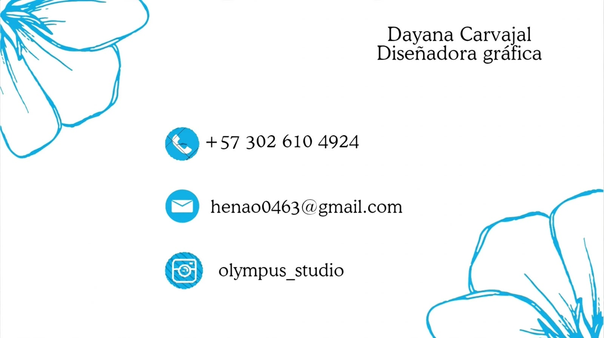
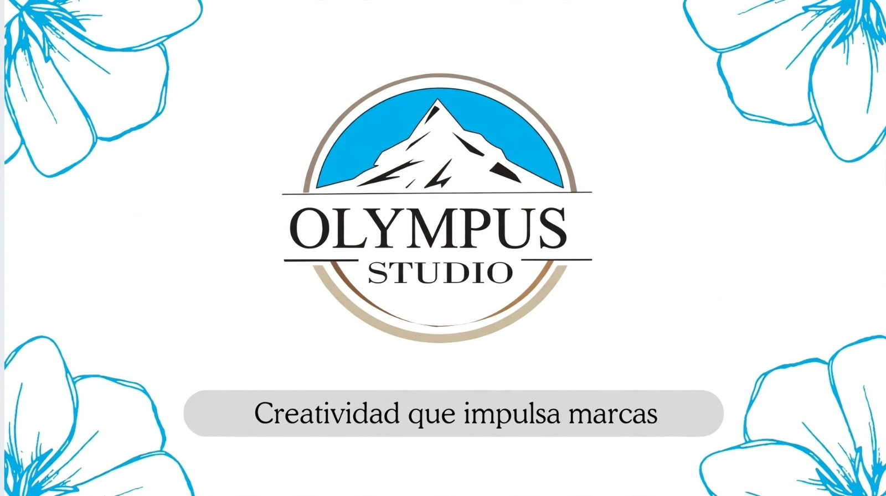
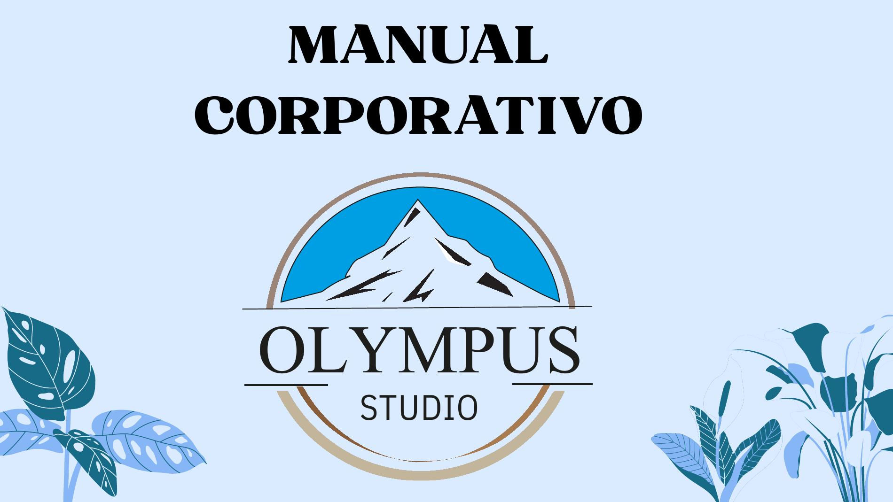
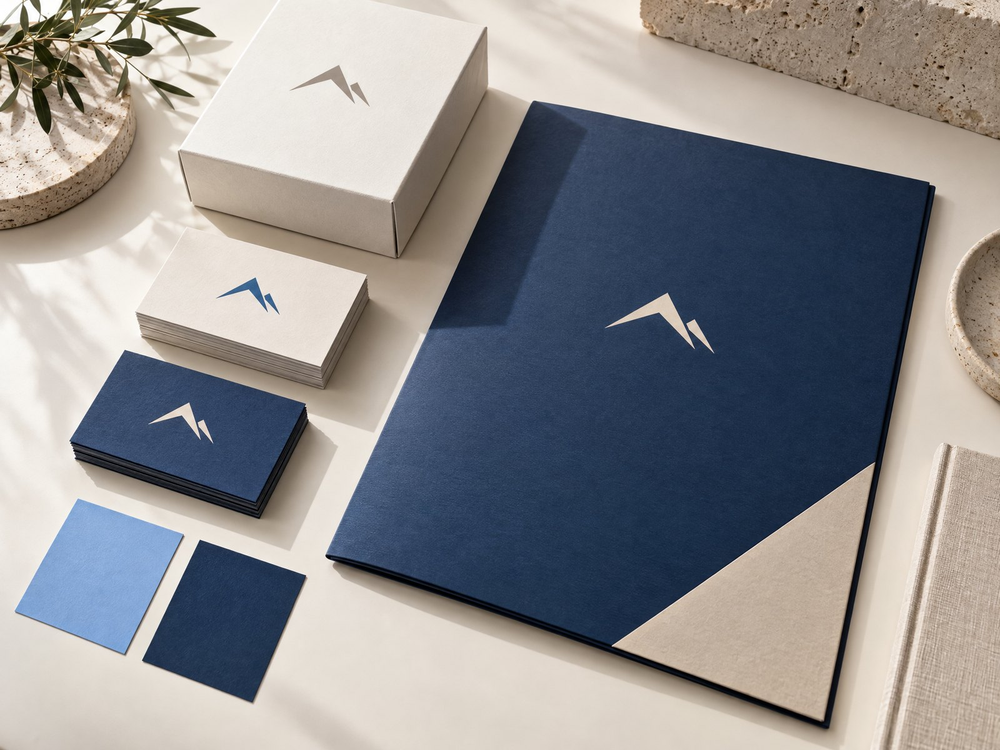

Lo que hacemos hoy
Misión
Crear los mejores contenidos visuales que conecten con las personas y las marcas, usando el diseño gráfico y la animación para comunicar ideas de una forma clara y con propósito.
Unimos estrategia, diseño y comunicación para que cada proyecto exprese lo mejor de lo que es: con claridad, carácter y una identidad que se sienta propia.
Conoce un poco más de nuestra energía, nuestra mirada y la forma en que damos vida a cada proyecto multimedia.
Creemos que una marca no se construye solo con un logo. Se construye con decisiones coherentes, una voz reconocible y una experiencia que las personas recuerdan.
Por eso trabajamos de cerca con cada proyecto: escuchamos, ordenamos y convertimos las ideas en un lenguaje visual con personalidad.
Soy Dayana Carvajal, creadora de Olympus Studio. Este proyecto nació de una idea sencilla: acompañar a cada persona a convertir lo que imagina en una marca que pueda mostrar con orgullo.
Me inspira escuchar y ayudar a quienes están construyendo algo propio. En Olympus trabajamos contigo para descubrir qué hace especial a tu proyecto y expresarlo con una identidad visual coherente: desde el logo y los colores hasta cada detalle que conecta con tus clientes.
¿Estás empezando o sientes que tu marca necesita renovarse? Te acompañamos paso a paso para que se vea auténtica, profesional y fácil de recordar.
Conoce nuestras tarjetas de presentación y descubre cómo cuidamos cada detalle de la identidad de Olympus Studio.
Ver tarjetas completas

Ver presentación ↗Explora la guía que reúne nuestra esencia, definiciones, identidad básica y el lenguaje visual de la marca.
Ver manual completo
Explorar manual ↗Construimos marcas con intención para que cada idea tenga una identidad clara, propia y lista para crecer.
Crear los mejores contenidos visuales que conecten con las personas y las marcas, usando el diseño gráfico y la animación para comunicar ideas de una forma clara y con propósito.
Para el año 2030, Olympus Studio será una agencia reconocida en Cali por su creatividad y por la forma de convertir ideas en diseños que llamen la atención, conecten con las personas y tengan un propósito.

Buscamos ideas propias, frescas y relevantes para que cada marca tenga una voz visual diferente.
Escuchamos, compartimos el proceso y construimos contigo soluciones que se sientan auténticas.
Trabajamos con responsabilidad, comunicación clara y acompañamiento durante todo el proceso.
Cuidamos la composición, los detalles y la entrega para que cada pieza esté lista para representar tu negocio.
Olympus Studio existe para acompañar a marcas y emprendimientos a expresar lo que los hace únicos. Creemos que una identidad bien pensada convierte una buena idea en una experiencia que las personas reconocen y recuerdan.
Por eso unimos estrategia, diseño y cercanía: escuchamos primero, encontramos una dirección visual y la llevamos con coherencia a cada punto de contacto de tu negocio.
Olympus nos inspira a buscar la mejor versión de cada idea y a avanzar paso a paso, en equipo.
El pico habla de metas y perspectiva; sus líneas recuerdan que cada proyecto se construye con decisiones pequeñas y cuidadas.
El aro reúne el símbolo y el nombre: representa continuidad, equilibrio y una identidad consistente en cada punto de contacto.
Estos cuatro tonos expresan la personalidad cercana, creativa y sólida que queremos compartir en cada proyecto.
Confianza, frescura y apertura a nuevas ideas.
Carácter, elegancia y contraste para comunicar con claridad.
Calidez y cercanía, una bienvenida visual a cada proyecto.
Profundidad, equilibrio y una base sólida para la marca.
Cuéntanos qué quieres comunicar y exploremos juntos una identidad visual que conecte con las personas correctas.
Cuéntanos qué tienes en mente